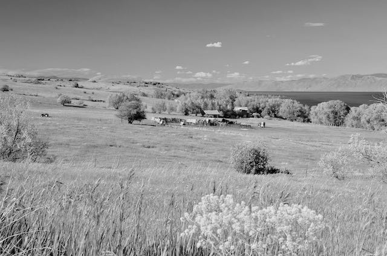

Fish Haven Idaho
- Fish Haven Weather information
- Currently: hot℉
- High: 80℉
- Wind Chill:
- Humidity: %
- Wind Speed:
- Condition:
- Feels like: ℉
5 Day Forcast
Today
℉

℉
℉
℉
℉
℉

Out of the Past
Herald-Journal | 1d
Up to this date, farmers in Bear Lake County have used approximately seven tons of squirrel bait. Fifteen tons have been used on government lands under auspices of Farm Bureau, directed by C.S. Hall, federal employee. Utah Power & Light Company have cooperated, purchasing 500 pounds for use on their right-of-ways. The County Agent is supervising the distribution of bait on the O.S.L.R.R. right of ways this week. Two hundred pounds of white arsenic and 100 gallons of refuse molasses have been furnished the farmers free through the Farm Bureau for fighting grasshoppers in various parts of the county. This pest is declared worse this year than has been known before. The bait is said to be killing grasshoppers by the tons and is very effective. Contact info:
Phone: (888) 888-8888
Email: fishhaven@noreply.com
Website: https://bearlake.org/loc/fish-haven
Phone: (888) 888-8888
Email: fishhaven@noreply.com
Website: https://bearlake.org/loc/fish-haven